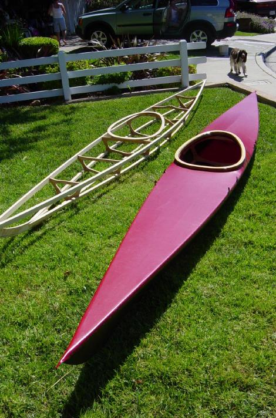

| Wood SOF Links | Return to SOF Main Menu |
|  |
The Phillips Family Adventure - Steve Phillips' instructions for building a wooden frame non-folding version of the "Sea Pup" kayak. Use the {Back} key to return.
Marcel's Kayak Web - The homebuilt kayaks of by Marcel Rodriguez including several versions of the SOF wood frame "Sea Flea". ( Kid's Stuff) Use the {Back} key to return. PaddleAndOar - The homebuilt SOF kayaks of Paul Montgomery plus numerous LINKs to kayaking resources. Use the {Back} key to return. |
| Wood frame Sea Pups by Steve Phillips | |